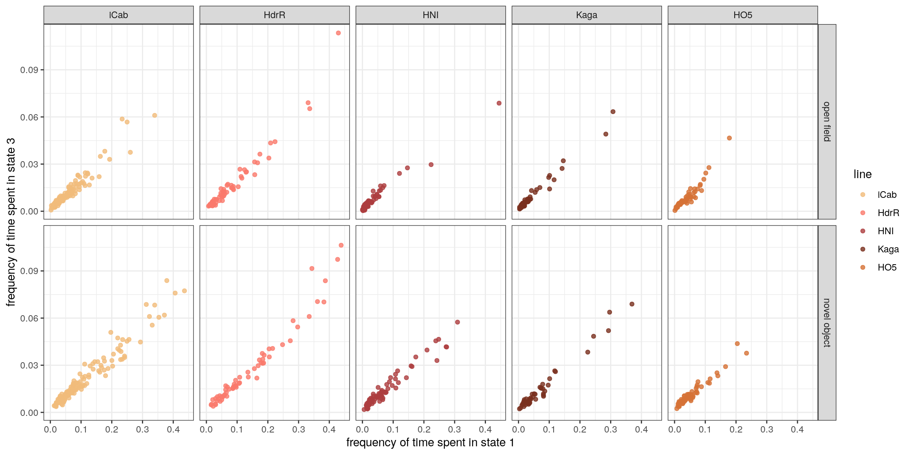

4 Exploration of states 1 and 3
library(tidyverse)
#> ── Attaching packages ─────────────────── tidyverse 1.3.1 ──
#> ✓ ggplot2 3.3.5 ✓ purrr 0.3.4
#> ✓ tibble 3.1.6 ✓ dplyr 1.0.8
#> ✓ tidyr 1.2.0 ✓ stringr 1.4.0
#> ✓ readr 2.1.2 ✓ forcats 0.5.1
#> ── Conflicts ────────────────────── tidyverse_conflicts() ──
#> x dplyr::filter() masks stats::filter()
#> x dplyr::lag() masks stats::lag()4.1 Read in and process data
IN = "/hps/nobackup/birney/users/ian/pilot/hmm_out/0.05/dist_angle/18.csv"
# Create line recode vector
line_vec = c("iCab", "HdrR", "HNI", "Kaga", "HO5")
names(line_vec) = c("icab", "hdr", "hni", "kaga", "ho5")
# Read in file
df = readr::read_csv(IN) %>%
# recode angle to sit between 0 and 360
dplyr::mutate(angle_recode = ifelse(angle < 0,
180 + (180 + angle),
angle))
#> Rows: 14651580 Columns: 15
#> ── Column specification ────────────────────────────────────
#> Delimiter: ","
#> chr (6): assay, ref_fish, test_fish, tank_side, quadrant...
#> dbl (9): date, time, frame, seconds, x, y, distance, ang...
#>
#> ℹ Use `spec()` to retrieve the full column specification for this data.
#> ℹ Specify the column types or set `show_col_types = FALSE` to quiet this message.
# Recode states by mean distance
rank_df = df %>%
dplyr::group_by(state) %>%
dplyr::summarise(mean_dist = mean(distance)) %>%
# rank
dplyr::arrange(mean_dist) %>%
dplyr::mutate(rank = 1:nrow(.))
recode_vec = rank_df %>%
dplyr::pull(rank)
names(recode_vec) = rank_df %>%
dplyr::pull(state)
# Recode `state`
df = df %>%
dplyr::mutate(state_recode = dplyr::recode(state, !!!recode_vec))Get DGE data frame
dge_df = df %>%
# remove iCab when paired with a different test fish
dplyr::filter(!(fish == "ref" & ref_fish == "icab" & test_fish != "icab")) %>%
# add `line` %>%
dplyr::mutate(line = dplyr::case_when(fish == "ref" ~ ref_fish,
fish == "test" ~ test_fish)) %>%
# recode line
dplyr::mutate(line = dplyr::recode(line, !!!line_vec)) %>%
# order line
dplyr::mutate(line = factor(line, levels = line_vec)) %>%
# mutate and factorise assay
dplyr::mutate(assay = stringr::str_replace(assay, "_", " "),
assay = factor(assay, levels = c("open field", "novel object")))
# Get proportions of time spent in each state
state_freq_dge = dge_df %>%
## unite columns to get reads for each fish
tidyr::unite(date, time, quadrant, fish,
col = "indiv",
sep = "_") %>%
## count rows per fish per state
dplyr::count(indiv, assay, line, state_recode) %>%
# add total row count per fish
dplyr::add_count(indiv, assay, line, wt = n, name = "nn") %>%
# get proportion of time fish spent in each state
dplyr::mutate(state_freq = n / nn)4.2 Correlation between states 1 and 3
# Create palette
new_pal = grDevices::colorRampPalette(wesanderson::wes_palette("GrandBudapest1"))
pal = new_pal(5)
names(pal) = line_vec
state_freq_dge %>%
# filter for states 1 and 3
dplyr::filter(state_recode == 1 | state_recode == 3) %>%
# put state_freq in different columns for the two states
tidyr::pivot_wider(id_cols = c(indiv, assay, line),
names_from = state_recode,
values_from = state_freq,
names_prefix = "freq_state_") %>%
ggplot() +
geom_point(aes(freq_state_1, freq_state_3, colour = line),
alpha = 0.8) +
scale_colour_manual(values = pal) +
theme_bw() +
facet_grid(cols = vars(line), rows = vars(assay)) +
xlab("frequency of time spent in state 1") +
ylab("frequency of time spent in state 3")
4.3 Density of time spent in states 1 and 3
# Create function for calculating density
get_density <- function(x, y, ...) {
dens <- MASS::kde2d(x, y, ...)
ix <- findInterval(x, dens$x)
iy <- findInterval(y, dens$y)
ii <- cbind(ix, iy)
return(dens$z[ii])
}
set.seed(2)
polar_fig = dge_df %>%
# filter for states 1 and 3
dplyr::filter(state_recode == 1 | state_recode == 3) %>%
# select random sample of 1e5 rows
#dplyr::slice_sample(n = 1e5) %>%
## unite columns to get reads for each fish
tidyr::unite(date, time, quadrant, fish,
col = "indiv",
sep = "_") %>%
# group by line
dplyr::group_by(line) %>%
dplyr::mutate(density = get_density(distance, angle, n = 100)) %>%
ggplot() +
geom_point(aes(angle_recode, log10(distance), colour = density),
alpha = 0.1, size = 0.2) +
coord_polar() +
facet_grid(rows = vars(state_recode), cols = vars(line)) +
scale_color_viridis_c() +
theme_bw() +
scale_x_continuous(labels = c(0, 90, 180, 270),
breaks = c(0, 90, 180, 270)) +
xlab("angle of travel") +
ylab(expression(log[10]("distance travelled in pixels")))
polar_fig